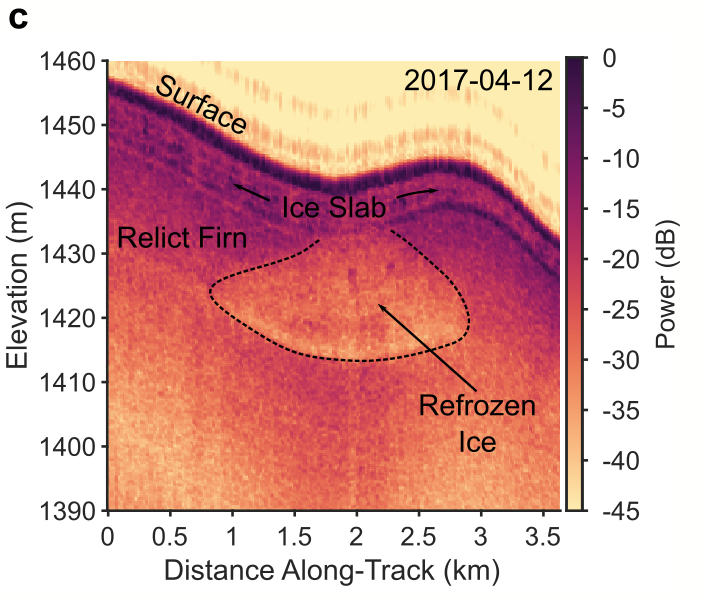
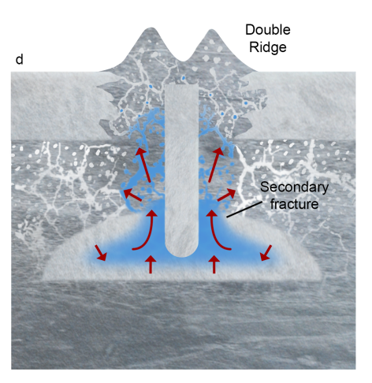
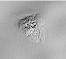
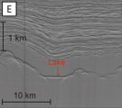

Surface-to-Bed Hydrologic Connections
On the Greenland Ice Sheet, most supraglacial lakes and streams eventually drain to the bed of the ice sheet, causing an influx of water and heat into the subglacial system that can lead to increased ice velocities and greater mass loss. The near-surface plays an important, but poorly understood, role in modulating the rate and timing of water delivery to the bed by acting as an exchange buffer between the supraglacial and subglacial systems. I combine ice penetrating radar and surface remote sensing with porous flow models to study these processes, with a particular focus on Greenland’s ice slab areas, where surface hydrology can interact with the relict layer of porous firn preserved beneath the ice slabs. These interactions also happen to be exciting analogs for the storage and refreezing of confined water sills on icy satellites like Europa, yielding broader insights into ice-water interactions in our solar system.
Recent Publications and Projects
-
 Shallow Fracture Buffers High Elevation Runoff in Northwest Greenland (Geophysical Research Letters, 2022)
If truly impermeable, rapidly expanding ice slabs threaten to significantly increase the area of the Greenland Ice Sheet where surface meltwater is lost to runoff. Instead, we use radar sounding observations and optical satellite imagery to show that in Northwest Greenland, supraglacial lakes or streams routinely drain through shallow surface crevasses into the underlying relict firn. This process reduces ice-slab induced runoff and limits the immediate impact of high-elevation surface melting on ice dynamics.
-
 Double Ridge Formation Over Shallow Water Sills on Jupiter's Moon Europa (Nature Communications, 2022)
Double ridges are the most common feature on the surface of Jupiter's moon Europa, but their formation is still poorly understood. We use radar sounding and surface elevation data to show that an analogous double ridge in Northwest Greenland formed by the successive refreezing, pressurization, and fracture of a shallow water sill, suggesting that Europa's double ridges may be expressions of shallow water reservoirs within its ice shell.
(Image Credit: Justice Blaine Wainwright)
Mentee Projects
-
 Abby Romo (Stanford) - Surface Expressions of Near-Surface Hydrology in Northwest Greenland
-
 Annabel Conger (Stanford) - Subglacial Lake Floor Reflectors in SPRI Data